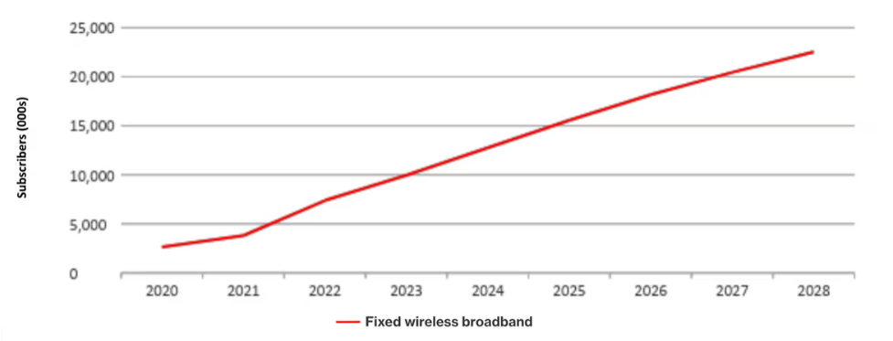

Satellite Wi-Fi, especially through low Earth orbit (LEO) constellations like Starlink, has created real opportunities for communities that traditional infrastructure has consistently skipped over. The technology isn't new — but what's changed in the last few years is the scale, speed and reliability. That shift matters.
Bridging the Digital Divide
Around 2.6 billion people worldwide are still offline as of 2024 — not because the internet doesn't exist, but because the cables and towers needed to reach them are too expensive to build (World Economic Forum, 2024). Ground-based broadband requires physical infrastructure across mountains, islands and sparsely populated plains. Satellite internet skips that entirely.
Real-world performance testing has shown that LEO systems significantly outperform older satellite technologies. Centenaro et al. (2026) measured Starlink latency in the 40–50ms range with throughput comparable to fixed wireless solutions, in stark contrast to traditional geostationary satellites which suffer 600+ millisecond delays due to their orbit at 35,000+ km above Earth. Ahmmed et al. (2022) argue that this latency improvement is the key shift that makes LEO satellites genuinely viable as a substitute for terrestrial broadband, rather than a stopgap. That's fast enough for video calls, cloud tools and anything that requires a live connection — what makes the technology actually useful rather than just technically present.

Education
Education is where the impact has been most visible. At the Navajo Nation's Ojo Encino Pre-School in New Mexico, teachers used to struggle to stream a single virtual lesson on one computer; after Starlink was installed, they could connect over a dozen devices simultaneously, all streaming, uploading, and using learning portals at once. In Mist, Oregon, Aaron Miller, Superintendent of Vernonia School District, described the change as "class-changing": 36 children now have simultaneous access where before there was barely enough connection for 2 or 3 stations.
The pattern repeats across other countries. Teach for Nigeria deployed 200 Starlink units across 120 schools in Ogun State, reaching 18,000 students. Rwanda connected 50 schools in underserved communities. In Malawi, solar-powered mobile classrooms using Starlink reached over 10,000 students through the BloomBox Design Labs initiative. Al-Hraishawi et al. (2022) note that the rapid commercial maturity of non-geostationary constellations is what makes such deployments practical at scale — the cost-per-terminal and bandwidth capacity have both crossed thresholds that previous satellite technology never managed. These aren't small experiments; they show the technology working in places where broadband was never going to arrive through a cable in the ground.
"Class-changing — 36 children now have simultaneous access where before there was barely enough connection for 2 or 3 stations." — Aaron Miller, Superintendent, Vernonia School District (Oregon)
Healthcare & Telemedicine
Healthcare access follows a similar pattern. In rural Virginia, the Health Wagon organisation secured Starlink installations for patients who had been relying on patchy cellular hotspots to connect with major medical centres. Health Wagon's President, Dr. Theresa Tyson, noted that virtual consultations, remote diagnostics and tele-specialty care were now available to patients who would otherwise struggle to reach those services (Health Wagon, 2025). For someone living hours from the nearest hospital, that's not a minor improvement.
The OECD (2023) connects high-quality rural connectivity directly to better health service delivery, identifying it as one of the most immediate benefits for remote communities.
Disaster Response
Satellite Wi-Fi also matters in disaster situations where ground infrastructure collapses entirely. Earthquakes, floods and conflict can take down cell towers and fiber networks in hours. Satellite terminals can restore communication quickly and without needing to rebuild anything on the ground.
Kapoor and Ashish (2023) examined satellite Wi-Fi terminal deployment specifically for post-disaster emergency communication, finding it a viable option for maintaining coordination between relief teams and affected populations when all other networks are down. The 2023 earthquakes in Türkiye were a clear example of that gap — mobile base stations were rushed in, but power outages limited them to only a few hours of operation per day, while satellite systems remained independent (Matracia et al., 2022).

Economic Opportunity
Then there's the economic side. Reliable connectivity is now treated as basic infrastructure for economic participation, not a luxury. Remote work, online markets, digital banking — all of it depends on a stable connection. The OECD (2023) links reliable rural connectivity directly to economic sustainability, arguing that communities with access to digital tools are more productive and less isolated from global markets. Ahmmed et al. (2022) make a similar point at the national level, framing LEO satellite broadband as a tool for addressing structural economic inequality between urban and rural areas. For a farmer in a remote region who can now sell goods online or access mobile banking for the first time, the difference is immediate.
Conclusion
Satellite Wi-Fi won't solve everything. Hardware costs are still a challenge and weather can disrupt signals. But the opportunities across education, healthcare, emergency response and economic access are well-documented and growing. As LEO constellations expand and equipment becomes cheaper, these opportunities will reach more people — including communities that have been waiting a long time.
See the full list of sources on the References page →